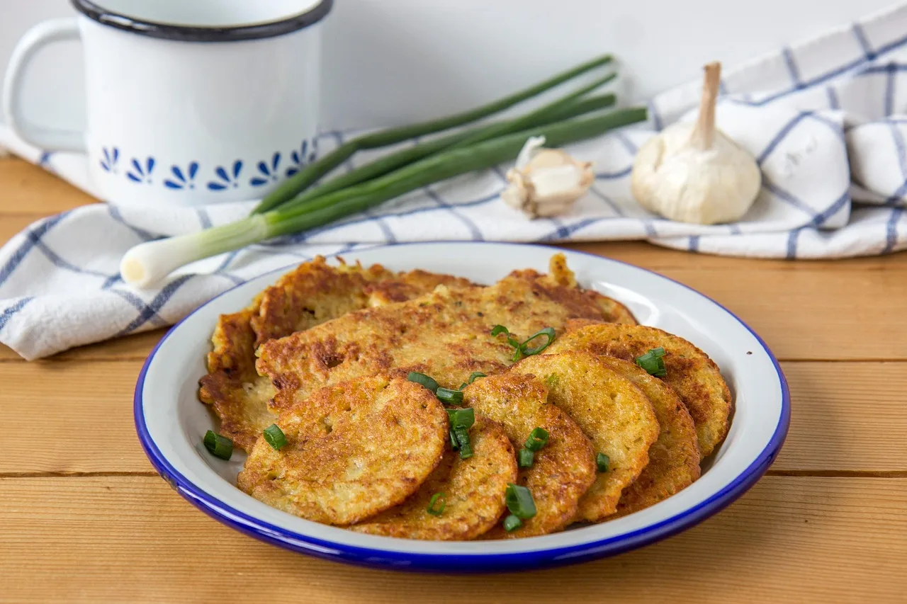

40 dicas de cozinha para o dia a dia
Truques simples para economizar, organizar a rotina, cozinhar com mais segurança e acertar o ponto — reunidos em um só lugar.

DICA DO DIA ·
Economia
- Congele o pão que vai sobrar ainda fresco, já fatiado: é só levar à torradeira direto do freezer.
- Talos de brócolis, couve e salsinha viram refogados, sopas e farofas — não jogue fora.
- Cascas de cebola, cenoura e aparas de legumes rendem um caldo caseiro: ferva por 40 minutos e coe.
- Banana muito madura? Descasque, congele e use em vitaminas, bolos e sorvete de banana.
- Compare o preço por quilo na etiqueta da gôndola, não o preço da embalagem.
- Arroz que sobrou vira bolinho, arroz de forno ou arroz frito com legumes e ovo.
Organização
- Separe todos os ingredientes antes de ligar o fogo (o “mise en place”): cozinhar fica mais rápido e sem esquecimentos.
- Na geladeira, o que vence primeiro vai para a frente. Etiquete potes com nome e data.
- Cozinhe feijão uma vez por semana e congele em porções para a semana toda.
- Deixe alho descascado e picado em um pote com azeite na geladeira por até 1 semana.
- Lave a louça enquanto a comida cozinha: no fim, sobra só a panela.
Técnica
- Frigideira bem quente antes da carne: é o que forma a crosta dourada. Não mexa no primeiro minuto.
- Sal na água do macarrão só depois que ferver, na proporção de 10 g por litro.
- Guarde uma xícara da água do macarrão: o amido ajuda a deixar o molho cremoso.
- Deixe a carne descansar 5 minutos depois de assar ou grelhar para os sucos se redistribuírem.
- Para cebola dourar e não queimar, comece com fogo médio e uma pitada de sal.
- Bolo: ingredientes em temperatura ambiente se misturam melhor e o bolo cresce mais.
- Não abra o forno nos primeiros 25 minutos de um bolo: a queda de temperatura faz ele solar.
- Faca afiada é mais segura que faca cega: escorrega menos e exige menos força.
- Tempere a salada só na hora de servir para as folhas não murcharem.
Truque
- Para descascar alho rápido, amasse levemente o dente com a lateral da faca.
- Limão rende mais suco se for rolado na bancada ou aquecido 10 segundos no micro-ondas.
- Ovo fresco afunda na água; ovo velho boia. Ovos que boiam devem ser descartados.
- Molho salgado demais? Acrescente batata em pedaços, um pouco de creme de leite ou mais tomate.
- Arroz queimou no fundo? Não raspe: transfira a parte de cima para outra panela.
- Feijão sem tempo de molho? Ferva 2 minutos, desligue e deixe tampado por 1 hora.
- Para cortar cebola sem chorar, deixe-a 10 minutos na geladeira antes.
- Pão amanhecido volta a ficar crocante com um borrifo de água e 3 minutos na air fryer ou no forno.
Segurança
- Use tábuas diferentes para carnes cruas e para alimentos prontos (saladas, pães).
- Não descongele carne sobre a pia: use a geladeira, água fria ou o micro-ondas.
- Comida pronta não deve ficar mais de 2 horas fora da geladeira.
- Frango deve atingir 74 °C no centro; use termômetro de cozinha.
- Panela de pressão: nunca encha acima de 2/3 e limpe a válvula regularmente.
- Óleo pegou fogo? Desligue o fogo e abafe com uma tampa. Nunca jogue água.
Saúde
- Troque metade do sal por ervas frescas, limão, alho e especiarias.
- Monte o prato com metade de legumes e verduras, um quarto de proteína e um quarto de carboidrato.
- Asse legumes com um fio de azeite a 200 °C: ficam doces e crocantes, sem fritura.
- Prefira água, chás e sucos naturais às bebidas açucaradas nas refeições.
- Grão-de-bico, lentilha e feijão são proteínas baratas e ricas em fibras.
- Cozinhar em casa, com alimentos in natura, é a principal recomendação do Guia Alimentar para a População Brasileira.